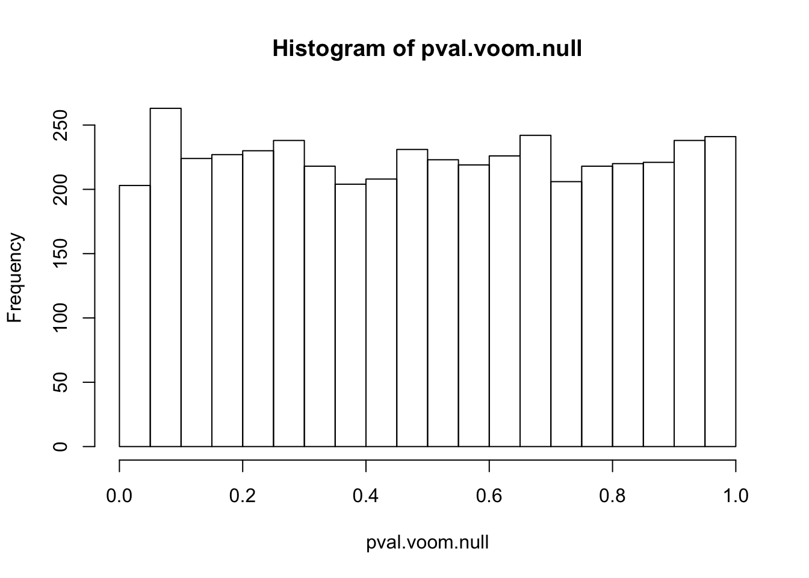
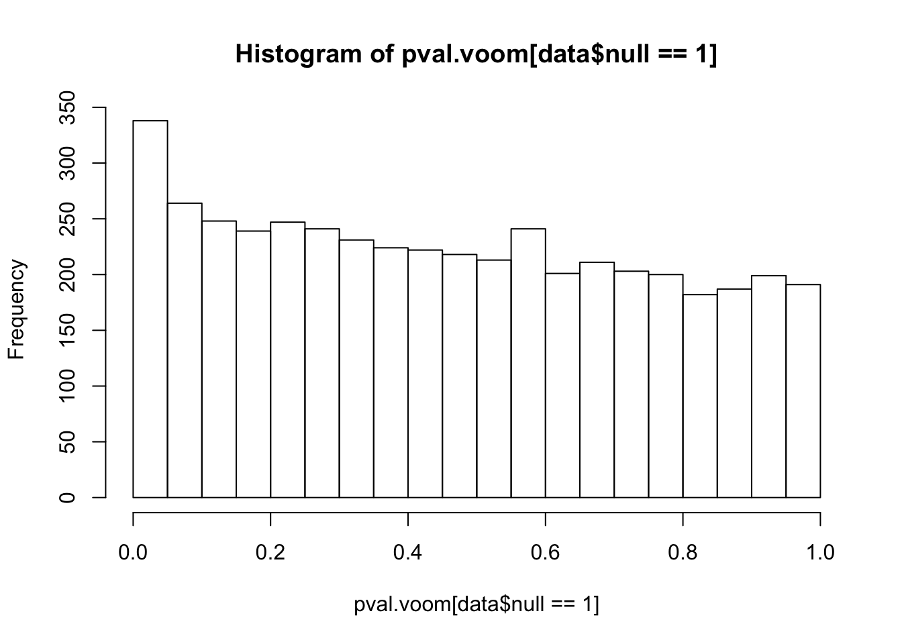
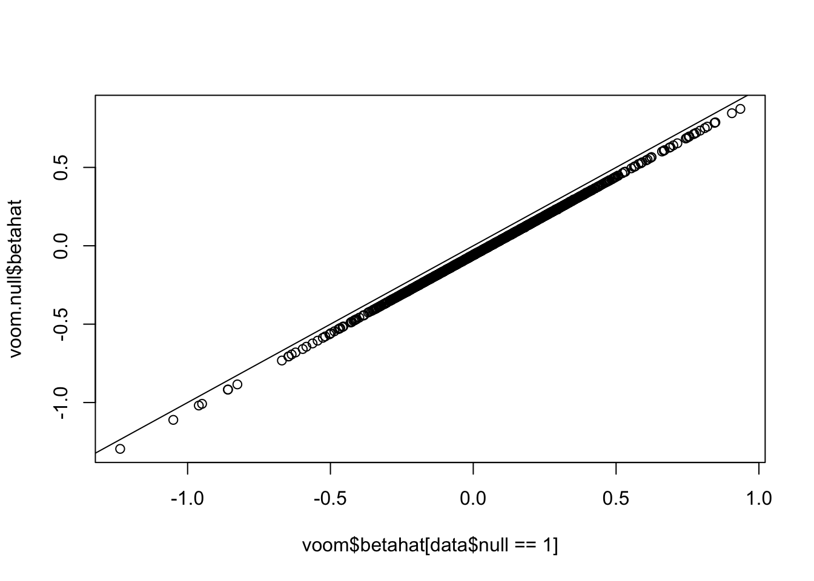
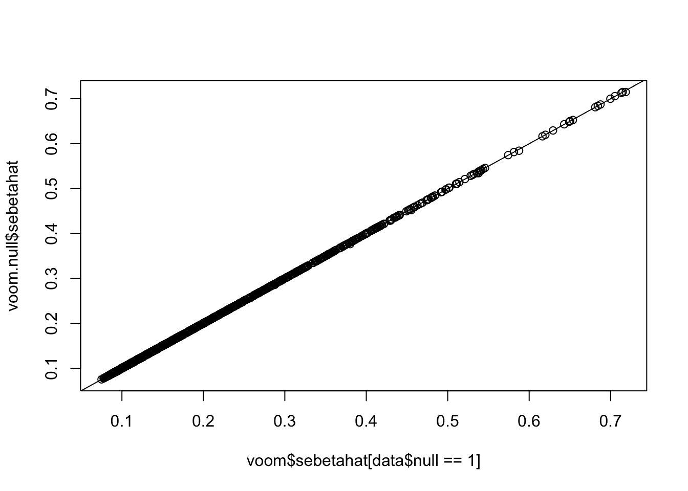
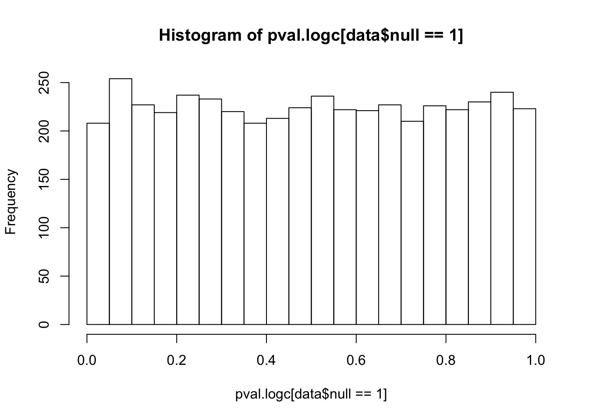

Last updated: 2016-02-04
Code version: cc743de0ed77120abe5ff470019987f7f7ba20fe
Define functions to generate an RNA-seq count matrix (with 2 conditions) and compute betahat (estimated effect size) & sebetahat (standard error):
library(limma)
library(edgeR)
library(qvalue)Warning: replacing previous import by 'grid::arrow' when loading 'qvalue'Warning: replacing previous import by 'grid::unit' when loading 'qvalue'library(ashr)
# Generate count matrix
countmat2 = function(counts1, counts2, Ngene, Nsamp, nullpi){
# For each gene, randomly select 2*Nsamp samples from counts1 (condition 1)
# and Nsamp samples from counts2 (condition 2)
counts1 = t(apply(counts1, 1, sampleingene, Nsamp=2*Nsamp))
counts2 = t(apply(counts2, 1, sampleingene, Nsamp=Nsamp))
counts = cbind(counts1,counts2)
# Remove genes without any reads
counts = counts[apply(counts,1,sum)>0,]
# Take the top Ngene high-expressed genes
counts = counts[sort(order(rowSums(counts),decreasing=TRUE)[1:Ngene]),]
# The first nullpi% genes are nulls: use the 2*Nsamp samples from condition 1
# The rest (1-nullpi)% gnes are alternatives: use the first Nsamp samples from condition 1
# and the Nsamp samples from condition 2
counts = rbind(counts[1:(Ngene*nullpi),1:(2*Nsamp)],
counts[(Ngene*nullpi+1):Ngene,c(1:Nsamp,(2*Nsamp+1):(3*Nsamp))])
null = c(rep(1,Ngene*nullpi),rep(0,Ngene-Ngene*nullpi))
# Split: first half samples as group A, second half samples as group B
condition = factor(rep(c(1,2),each=Nsamp))
return(list(counts=counts,condition=condition,null=null))
}
# Sample individuals for each gene
sampleingene = function(gene, Nsamp){
sample = sample(length(gene), Nsamp)
return(c(gene[sample]))
}
# Voom transformation
voom_transform = function(counts, condition, W=NULL){
dgecounts = calcNormFactors(DGEList(counts=counts,group=condition))
#dgecounts = DGEList(counts=counts,group=condition)
if (is.null(W)){
design = model.matrix(~condition)
}else{
design = model.matrix(~condition+W)
}
v = voom(dgecounts,design,plot=FALSE)
lim = lmFit(v)
betahat.voom = lim$coefficients[,2]
sebetahat.voom = lim$stdev.unscaled[,2]*lim$sigma
df.voom = length(condition)-2-!is.null(W)
return(list(betahat=betahat.voom, sebetahat=sebetahat.voom, df=df.voom, v=v))
}
# Log(counts+1) + simple linear regression
logc = function(counts, condition){
logcounts = log(counts+1)
design = model.matrix(~condition)
lim = lmFit(logcounts,design)
betahat = lim$coefficients[,2]
sebetahat = lim$sigma*lim$stdev.unscaled[,2]
df = length(condition)-2
return(list(betahat=betahat,sebetahat=sebetahat,df=df))
}Generate a dataset with 5000 genes (90% nulls and 10% alternatives). For each null gene we randomly select 100 GTEx lung samples and split them into two groups (50 samples for each group). For each alternative gene we randomly select 50 lung samples and 50 liver samples. All genes are independent from each other due to the sampling procedure.
set.seed(198)
lungdata = read.table("../data/Lung.txt")
liverdata = read.table("../data/Liver.txt")
data = countmat2(lungdata, liverdata, Ngene=5000, Nsamp=50, nullpi=0.9)Try voom on the mixed dataset (90% null and 10% alternatives) and the pure null subset:
# voom on mixed data (90% null)
voom = voom_transform(data$counts, data$condition)
pval.voom = 2*(1-pt(abs(voom$betahat/voom$sebetahat),df=voom$df))
# voom on the pure null part
voom.null = voom_transform(data$counts[data$null==1,], data$condition)
pval.voom.null = 2*(1-pt(abs(voom.null$betahat/voom.null$sebetahat),df=voom.null$df))Histograms of voom’s p-values: p-values are uniformly distributed if all genes are nulls. However, once we add some alternative genes into the dataset and perform voom transformation on the whole mixed dataset, the p-values of null genes are no longer uniform! (Null genes’ estimated effect sizes shift but standard errors hardly change)
hist(pval.voom.null,25)
hist(pval.voom[data$null==1],25)
plot(voom$betahat[data$null==1],voom.null$betahat)
abline(0,1)
plot(voom$sebetahat[data$null==1],voom.null$sebetahat)
abline(0,1)
Estimate the null proportion from voom’s results by ash or qvalue: significantly underestimate it (much lower than the true setting: 90%)!!!!
a.voom = ash(voom$betahat,voom$sebetahat,df=voom$df)
pi0.ash.voom = a.voom$fitted.g$pi[1]
pi0.ash.voom[1] 0.5326329pi0.qval.voom = qvalue(pval.voom)$pi0
pi0.qval.voom[1] 0.7681244Try if log(counts+1)+OLS (David found it performed well in his simulations) or quantile normalization can fix this issue: log(counts+1)+OLS indeed gives uniform null p-values (which makes sense since it won’t introduce any extra correlation or inflation).
# log(counts+1)
logc = logc(data$counts, data$condition)
pval.logc = 2*(1-pt(abs(logc$betahat/logc$sebetahat),df=logc$df))
a.logc = ash(logc$betahat,logc$sebetahat,df=logc$df)
pi0.ash.logc = a.logc$fitted.g$pi[1]
pi0.ash.logc[1] 0.8833165hist(pval.logc[data$null==1],25)
sessionInfo()R version 3.2.3 (2015-12-10)
Platform: x86_64-apple-darwin13.4.0 (64-bit)
Running under: OS X 10.11.2 (El Capitan)
locale:
[1] en_US.UTF-8/en_US.UTF-8/en_US.UTF-8/C/en_US.UTF-8/en_US.UTF-8
attached base packages:
[1] stats graphics grDevices utils datasets methods base
other attached packages:
[1] REBayes_0.61 Matrix_1.2-3 ashr_1.0.8 qvalue_2.0.0 edgeR_3.10.5
[6] limma_3.24.15 knitr_1.12.3
loaded via a namespace (and not attached):
[1] Rcpp_0.12.3 magrittr_1.5 MASS_7.3-45
[4] splines_3.2.3 pscl_1.4.9 munsell_0.4.2
[7] doParallel_1.0.10 lattice_0.20-33 SQUAREM_2014.8-1
[10] colorspace_1.2-6 foreach_1.4.3 stringr_1.0.0
[13] plyr_1.8.3 tools_3.2.3 parallel_3.2.3
[16] grid_3.2.3 gtable_0.1.2 iterators_1.0.8
[19] htmltools_0.3 assertthat_0.1 yaml_2.1.13
[22] digest_0.6.9 reshape2_1.4.1 ggplot2_2.0.0
[25] formatR_1.2.1 codetools_0.2-14 evaluate_0.8
[28] rmarkdown_0.9.2 stringi_1.0-1 Rmosek_7.1.2
[31] scales_0.3.0 truncnorm_1.0-7